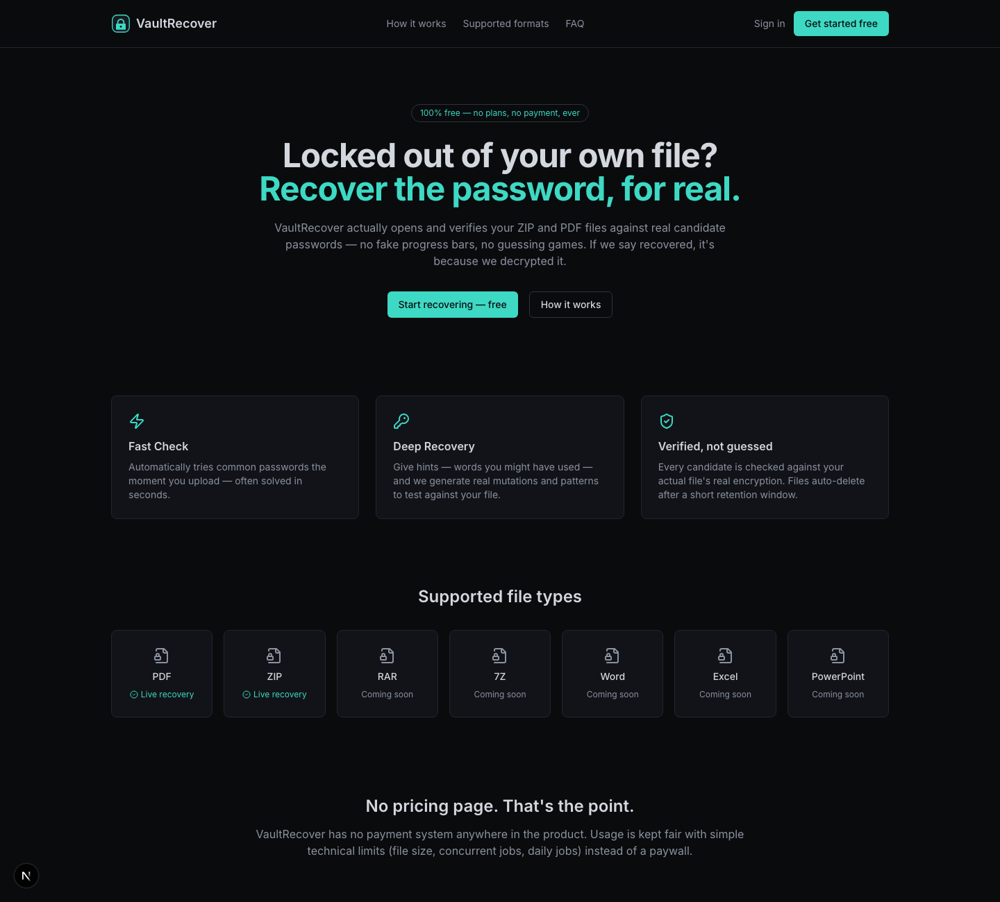
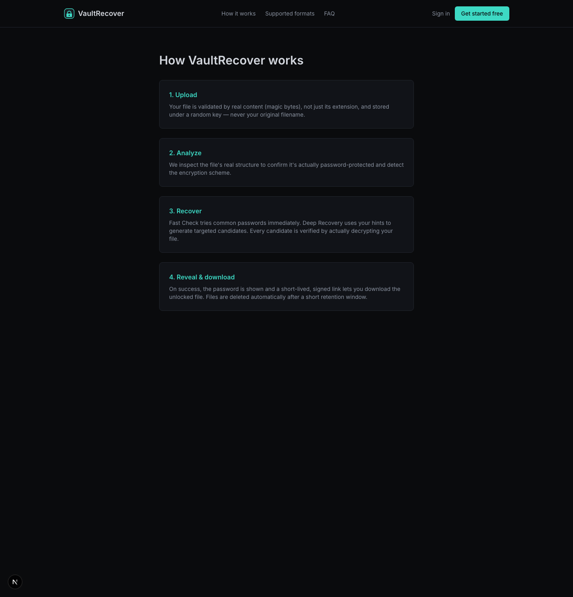
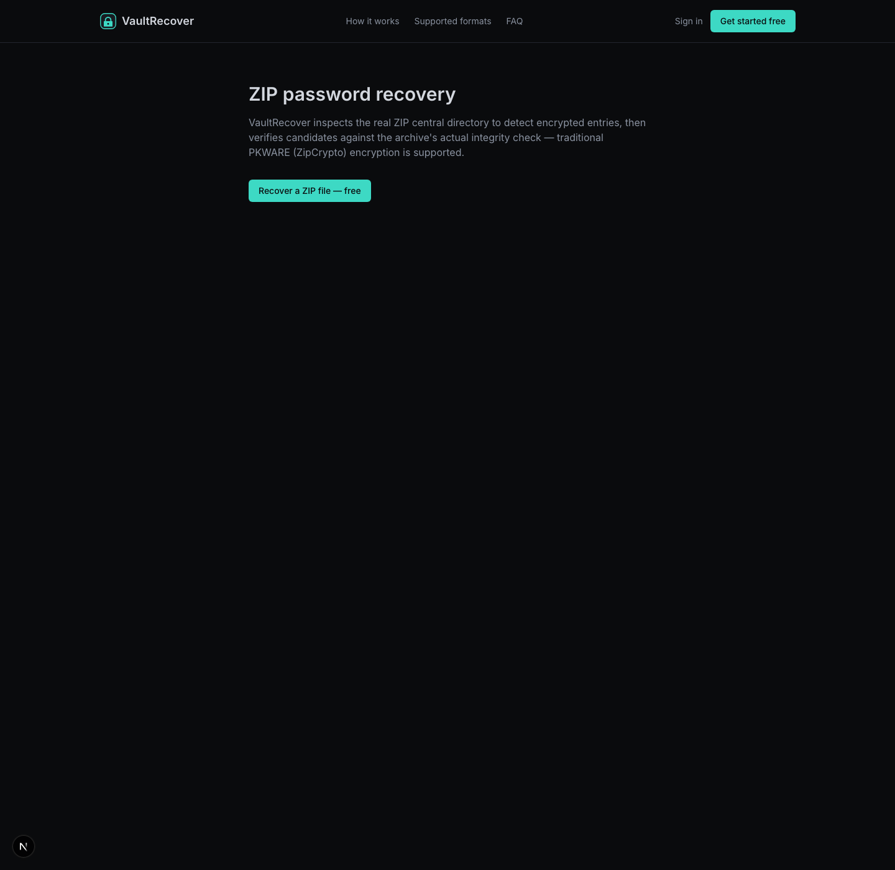
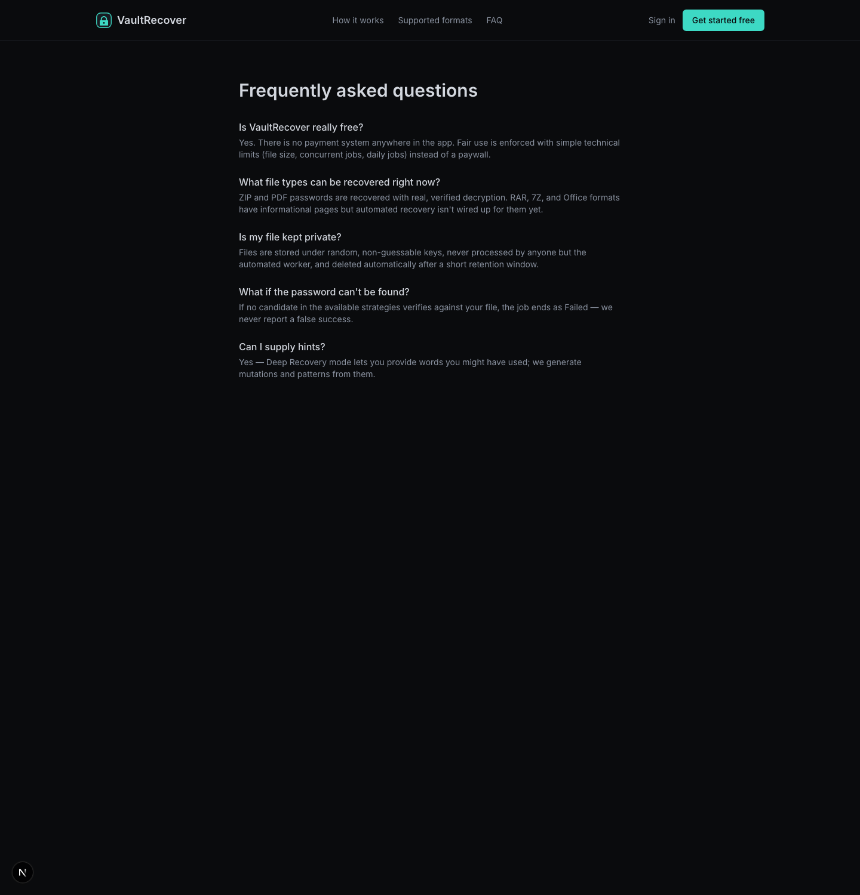

Verified, not guessed
Every candidate is checked against your real file's encryption. A match is a confirmed decrypt, never a header guess.
No payment, anywhere
There is no billing code in the product. Fair use is handled with simple technical limits instead of a paywall.
Your file stays yours
Uploads are validated, processed for the one request, and removed. Nothing is kept after the attempt on the hosted build.
What runs where
| Format | Hosted (live site) | Local install |
|---|---|---|
| ZIP (traditional / ZipCrypto) | Works in-browser | Works |
| Run locally | Works (qpdf) | |
| Office · 7-Zip | Run locally | Works |
The live site verifies traditional-PKWARE ZIP passwords entirely inside a serverless function — no worker, no command-line tools. Pure-TypeScript ZipCrypto, parity-tested against the unzip binary with zero false positives. Other formats recover in the local worker, and the UI says so honestly.
A look inside




Documentation
Architecture
Components and data flow, hosted and local.
Security
Validation, limits, and what's deferred.
Deployment
Vercel + Neon, and the full local setup.
API
Every route and its contract.